정보보안기사 (2014-04-05 기출문제)
1과목: 시스템 보안
1. NTFS에서 Sector_per_cluster로 정할 수 없는 것은 무엇인가?
- 1
- 6
- 8
- 16
(정답률: 47%)

2. 가상메모리를 지원하는 운영체제에서 성능은 가상주소를 실주소로 변환하는 DAT(Dynamic Address Translation)에 의해 영향을 받는다. DAT를 빠른 순서에서 느린 순서로 나열한 것은?
- 직접사상 – 연관사상 – 직접/연관사상
- 연관사상 – 직접사상 – 직접/연관사상
- 직접/연관사상 – 직접사상 – 연관사상
- 연관사상 – 직접/연관사상 – 직접사상
(정답률: 50%)
3. 다음 설명하고 있는 스케줄링 기법은은 무엇인가?
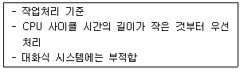
- 선입선출(FIFO)
- SJF
- 우선순위
- 다단계큐
(정답률: 7%)
4. 다음 중 버퍼 오버플로우 대응책으로 올바르지 못한 것은?
- 버퍼 오퍼플로우 취약점이 생기지 않도록 패치를 정기적으로 한다.
- 문자길이를 검사하지 않는 함수를 사용하지 않고 안전한 프로그래밍을 해야 한다.
- 함수로부터 복귀할 때 스택의 무결성을 검사한다.
- 사용자의 스택 혹은 힙 영역의 쓰기 및 실행권한을 준다.
(정답률: 43%)
5. 다음은 리눅스 파일권한에 대한 설명이다. 올바르지 못한 것은?
- ls –al명령어로 권한을 자세히 볼 수 있다.
- chmod명령어는 파일, 디렉토리명을 수정할 수 있다.
- 맨앞에 문자가‘-’이면 파일, ‘d’이면 디렉토리, ‘l’이면 링크이다.
- chown 명령어는 파일소유자, 파일소유그룹을 수정 할 수 있다.
(정답률: 53%)
6. 다음중 레지스트리 키 값에 없는 것은?
- HKEY_CLASSES_ROOT
- HKEY_LOCAL_MACHINE_SAM
- HKEY_USERS
- HKEY_CURRENT_USER
(정답률: 92%)
7. 다음 보여주고 있는 아파치 관련 설정파일은 무엇인가?
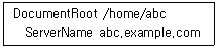
- httpd.conf
- apache.conf
- virtualhost.conf
- server.conf
(정답률: 37%)
8. 다음중 패스워드로 가장 강력한 것은?
- 123qwe
- wJqHdK12!%$
- ASDqwe
- qwerasdf
(정답률: 81%)
9. 시스템 무결성을 유지하기 위한 명령어는 무엇인가?
- halt
- shutdown
- reload
- reboot
(정답률: 56%)
10. 다음 중 HTTP/1.1 프로토콜에 대한 설명으로 올바르지 않은 것은?
- 클라이언트가 서버에 커넥션을 시도한다.
- HTTP/1.1 GET방식으로 데이터를 요청한다.
- 서버는 해당 데이터를 검색하여 클라이언트에게 전달한다.
- POST는 클라이언트가 정보를 받아들이고 클라이언트에서 동작하도록 요청하는 방식이다.
(정답률: 43%)
11. 공유폴더 사용권한의 특징에 대한 설명으로 올바르지 못한 것은?
- 공유폴더 사용권한은 파일에도 적용된다.
- NTFS사용권한보다 약한 보안을 제공한다.
- 네트워크 접근 사용만을 제한하고 로컬접속을 제어할 수 없다.
- 기본 공유폴더 사용권한은 Everyone 그룹에게 모든 권한이 주어진다.
(정답률: 17%)
12. 프로세스 교착상태 발생조건에 해당되지 않는 것은?
- 점유와 대기
- 상호배제
- 비중단조건
- 중단조건
(정답률: 19%)
13. 다음 나열된 도구들이 공통적으로 가지고 있는 특징은 무엇인가?
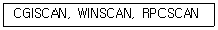
- 다중취약점 스캔
- 특정취약점 스캔
- 은닉스캔
- 네트워크 구조 스캔
(정답률: 28%)
14. 다음중 기본 공유폴더 형태가 아닌 것은?
- C$
- ADMIN$
- PRINT$
- IPC$
(정답률: 71%)
15. 다음은 리눅스 시스템 최적화 모니터링 명령어들이다. 무엇을 모니터링 하는 명령어인가?
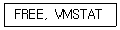
- CPU문제점 점검
- 메모리 문제점 점검
- 디스크I/O문제점 점검
- 네트워크 문제점 점검
(정답률: 47%)
16. TCP_WRAPPER 활용시에 로그파일은 일반적으로 ( )과 ( )파일에 기록된다. 괄호안에 순서대로 알맞은 내용은?
- dmessage, secure
- message, secure
- btmp, message
- wtmp, secure
(정답률: 45%)
17. 다음에서 설명하고 있는 스캔탐지도구는 무엇인가?
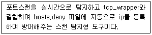
- SARA
- NESSUS
- PORTSENTRY
- NIKTO2
(정답률: 30%)
18. 파일이 생성되는 순간부터 로그인가 로그아웃의 정보를 보여주는 로그 파일은 무엇인가?
- wtmp
- utmp
- last
- secure
(정답률: 34%)
19. 다음 중 커널에 대한 설명으로 올바르지 못한 것은?
- 커널은 프로세스, 파일시스템, 메모리 , 네트워크의 관리를 맡는다.
- 컴퓨터 운영체제 핵심으로서 컴퓨터의 가장 기본적인 각 장치들을 관리하고 제어하기 위한 소프트웨어이다.
- 장치 혹은 시스템의 기능과 관련된 변화가 있을 경우 새로운 커널을 생성해야한다.
- 유닉스 계열의 시스템이 부팅될 때 가장 먼저 읽히는 운영체제의 핵심으로 보조기억장치에 상주한다.
(정답률: 34%)
20. 버퍼오버플로우에 대한 설명으로 올바르지 않은 것은?
- 버퍼에 저장된 프로세스 간의 자원 경쟁을 야기해 권한을 획득하는 기법으로 공격하는 방식이다.
- 오버플로우에는 힙오버플로우와 스택오버플로우가 있다.
- 버퍼오버플로우가 발생하면 데이터는 인접한 포인트 영역까지 침범한다.
- 대응책은 데이터가 들어가는 배열의 읽기, 쓰기가 배열 범위를 벗어나지 않는지 검사한다.
(정답률: 60%)
2과목: 네트워크 보안
21. 다음 나열된 장비 중 네트워크 계층에서 이용하는 장비는 무엇인가?
- 리피터
- 허브
- 브릿지
- 라우터
(정답률: 74%)
22. 다음중 IP클래스 범위로 올바르지 않은 것은?
- A : 0.0.0.0 ~ 127.255.255.255
- B : 128.0.0.0 ~ 191.255.255.255
- C: 193.0.0.0 ~ 223.255.255.255
- D : 224.0.0.0. ~ 239.255.255.255
(정답률: 56%)
23. 다음은 IPSec 프로토콜에 대한 설명이다. 괄호안에 알맞은 내용으로 연결된 것은?
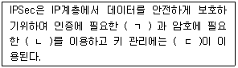
- AH-ESP-IKE
- ESP-IKE-AH
- ESP-AH-IKE
- IKE-ESP-AH
(정답률: 54%)
24. 다음과 같은 사이버 공격기법을 무엇이라 하는가?
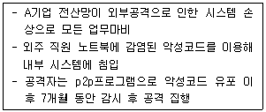
- APT 공격
- 드라이브 바이 다운로드 공격
- 워터링 홀 공격
- 랜섬웨어 공격
(정답률: 67%)
25. 내부에서 백신설치 여부나 컴퓨터 이름 등으로 pc나 노트북 등 매체등을 제어할 수 있는 솔루션을 무엇이라 하는가?
- ESM
- MDM
- NAC
- SEIM
(정답률: 47%)
26. 설명하고 있는 네트워크 공격방법은 무엇인가?
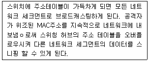
- ARP 스니핑
- ICMP Redirect
- ARP 스푸핑
- 스위치 재밍
(정답률: 46%)
27. 스위치 환경에서 나타나는 스니핑 기법이 아닌 것은 무엇인가?
- 스위치 재밍
- ICMP Redirect
- ARP 스푸핑
- 세션하이재킹
(정답률: 42%)
28. 라우터는 목적지까지 가는 최단경로를 계산하기 위해 다익스트라 알고리즘을 사용한다. 가장 적합한 라우팅 알고리즘은 무엇인가?
- RIP
- IGRP
- OSPF
- EIGRP
(정답률: 50%)
29. 다음에서 설명하는 프로세스 스케줄링 방법은 무엇인가?
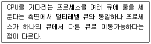
- FIFO
- SJF
- RR
- MLFQ
(정답률: 40%)
30. 다음에서 설명하고 있는 것은?
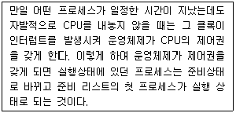
- 인터럽트 출력
- RTC
- FSB
- 오버클럭
(정답률: 43%)
31. ICMP에서 TTL=0이 되어 도달할 때 메시지는 무엇인가?
- ICMP unreachable
- echo reply
- TTL exceeded
- echo request
(정답률: 18%)
32. 다음 보기에서 설명하고 있는 네트워크 토폴로지는 무엇인가?
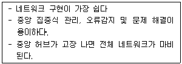
- 메시형
- 스타형
- 트리형
- 버스형
(정답률: 74%)
33. 모든IT시스템에서 생성되는 로그와 이벤트를 통합관리래 외부 위험을 사전에 예측하고 내부 정보 유출을 방지할 수 있도록 하는 개념의 보안 솔루션은 무엇인가?
- ESM
- IAM
- SIEM
- DLP
(정답률: 39%)
34. 다음 포트스캔 중 공격자가 공격했을 때 포그가 열린 경우 돌아오는 응답이 다른 하나는?
- FIN
- NULL
- TCP
- UDP
(정답률: 25%)
35. 다음 설명하고 잇는 공격방식은 무엇인가?
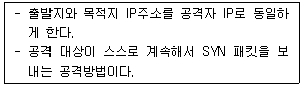
- Land attack
- Ping of Death
- Tear Drop
- Smurf Attack
(정답률: 63%)
36. 스니핑 방지 대책으로 올바르지 않은 것은?
- 원격 접속 시에는 SSH프로토콜을 이용하여 전송간 암호화한다.
- 메일 사용 시에 S/MIME가 적용된 안전한 메일을 이용한다.
- 전자상거래 이용 시 SSL이 적용된 사이트를 이용한다.
- 스위치에서 MAC주소 테이블을 동적으로 지정한다.
(정답률: 69%)
37. 다음 중 IPSec VPN프로토콜에 대한 설명으로 올바르지 않은 것은?
- IPSec은 3계층 프로토콜이다.
- AH와 ESP기능을 지원한다.
- 종단시스템에서 출발하고 종단시스템에서 수신하는 모드를 터널모드라한다.
- IETF에 의해 IP계층 보안을 위한 개방형 구조로 설계된 VPN기술이다.
(정답률: 65%)
38. 다음 중 무선 랜 보안대책 수립으로 올바르지 못한 것은?
- AP전파가 건물 내로 한정 되도록 한다.
- AP는 외부인이 쉽게 접근하거나 공개된 장소에 설치한다.
- AP가 제공하는 강력한 키를 설정하고 주기적으로 변경한다.
- WIPS등을 설치하여 불법접근이나 악의적인 의도 차단을 모니터링한다.
(정답률: 34%)
39. 시스템에 대한 침임 탐지와 차단을 동시에 할 수 있는 솔루션은 무엇인가?
- SIEM
- ESM
- IPS
- IDS
(정답률: 42%)
40. 다음에서 설명하고 있는 네트워크 공격 기법은 무엇인가?
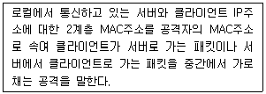
- 세션하이재킹
- IP스푸핑
- ARP스푸핑
- 스니핑공격
(정답률: 45%)
3과목: 어플리케이션 보안
41. FTP전송 모드에 대한 설명으로 올바른 것은?
- 기본은 액티브 모드이며, 패시브 모드 변경은 FTP서버가 결정한다.
- 기본은 액티브 모드이며, 패시브 모드 변경은 FTP클라이언트가 결정한다.
- 기본은 패시브 모드이며, 패시브 모드 변경은 FTP서버가 결정한다.
- 기본은 패시브 모드이며, 패시브 모드 변경은 FTP클라이언트가 결정한다.
(정답률: 67%)
42. FTP접속 시 PORT 명령으로 보기와 같은 내용을 확인 하였다. 다음접속 포트는 몇 번인가?
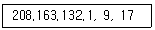
- 2,320
- 2,321
- 2,322
- 2,323
(정답률: 53%)
43. 전자상거래 프로토콜 중에서 주문정보와 지불정보를 안전하게 이용할 수 있도록 하는 프로토콜은 무엇인가?
- 단체서명
- 단독서명
- 이중서명
- 은닉서명
(정답률: 70%)
44. 전자투표와 전자화폐의 공통된 요구조건 사항은?
- 양도성
- 익명성(비밀성)
- 단일성
- 합법성
(정답률: 42%)
45. 다음 설명하고 있는 보안 전자우편시스템 프로토콜은?
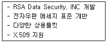
- PEM
- MIME
- S/MIME
- PGP
(정답률: 56%)
46. 다음 전자투표 방식 중 군중이 밀집한 지역에 투표기가 설치되어 투표할 수 있는 무인투표 시스템방식은 무엇인가?
- 키오스크방식
- PSEV방식
- REV방식
- LKR방식
(정답률: 73%)
47. 다음중 가치 저장형 전자화폐 프로토콜이 아닌 것은?
- 몬덱스
- Visa Cash
- K-Cash
- Milicent
(정답률: 46%)
48. 다음에서 설명하고 있는 OTP(일회용패스워드)생성 방식은 무엇인가?
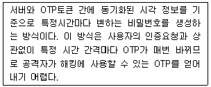
- 시간동기화 방식
- 이벤트통기화 방식
- 질문응답방식
- 조합방식
(정답률: 19%)
49. 다음 설명하고 있는 DB접근 제어방식은 무엇인가?
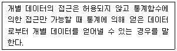
- 접근통제
- 흐름제어
- 추론제어
- 데이터 제어
(정답률: 38%)
50. 메일과 관련이 없는 서비스 포트는?
- 109
- 995
- 993
- 163
(정답률: 46%)
51. 다음 중 OWASP TOP10 2013에 포함되지 않는 것은?
- 인젝션
- URL접근제한 실패
- XSS
- 크로스사이트 요청변조
(정답률: 45%)
52. 다음에서 설명하고 있는 웹 공격 방법은 무엇인가?
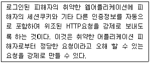
- 알려진 취약점 컴포넌트 사용
- 크로스사이트 요청변조
- 민감한 데이터 노출
- 인증 및 세션관리 취약점
(정답률: 48%)
53. 소프트웨어 보안약점 중 보안기능을 적절하지 않게 구현했을 때 발생할 수 있는 보안 약점이 아닌 것은?
- 부적절할 인가
- 패스워드 평문저장
- 제어문을 사용하지 않는 재귀함수
- 사용자 중요정보 평문 전송
(정답률: 48%)
54. SET프로토콜의 장점이 아닌 것은?
- 전자거래의 사기를 방지한다
- 기존 신용카드 기반 그대로 활용한다.
- SSL의 단점을 해결한다.
- 암호 프로토콜이 너무 복잡하다.
(정답률: 50%)
55. 다음 설명 중 SSL프로토콜에 대한 설명으로 올바르지 못한 것은?
- 1994년 네스케이프사에서 처음 제안하였다.
- 1996년 IETF에서 SSL3.0을 제안하였다.
- SSL이 적용되었다는 표시로 SHTTP라고 사용한다.
- SSL프로토콜은 TCP계층과 응용계층 사이에서 동작한다.
(정답률: 62%)
56. 다음 중 지불브로커 시스템 특징이 아닌 것은 무엇인가?
- 독립적 신용구조를 갖지 않는다.
- 신용카드, 은행을 이용하여 지불하도록 연결하는 구조이다.
- 현실적 전자 지불 시스템이다.
- 실제 화폐를 대치할 수 있다.
(정답률: 30%)
57. 다음 중 전자입찰시스템에서 요구하는 안전성에 포함되지 않는 것은?
- 단일성
- 비밀성
- 무결성
- 공평성
(정답률: 20%)
58. 다음 중 ebXML 종류에 포함되지 않는 것은?
- SAML
- XKMS
- XACML
- CALS
(정답률: 57%)
59. Mod_security 아파치 모듈 기능에 포함되지 않는 것은?
- Request filtering : 요청이 들어와서 웹서버나 다른 모듈에 의해 사용되기전에 요청을 분석한다.
- Anti-evasion TechnIques : 회피공격에 대응하기 위해 분석 전에경로나 파라미터 값들을 표준화 한다.
- Audit Logging : 사후 사고에 대한 분석을 위한 세부 상황 기록기능은 없다.
- HTTPS Filtering : 웹서버에 모듈로 끼워지기 때문에 요청된 데이터가 복호화 된 후 에 접근이 가능하다.
(정답률: 38%)
60. 다음에서 설명하고 있는 DNS공격 방법은 무엇인가?
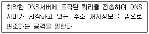
- DNS DDOS
- DNS하이재킹
- DNS 캐시 포이즈닝 공격
- DNSSEC
(정답률: 80%)
4과목: 정보 보안 일반
61. 공개키 기반구조(PKI)의 응용분야가 아닌 것은?
- SET
- S/MIME
- PGP
- 커버로스
(정답률: 43%)
62. 다음에서 설명하는 DRM기술은 무엇인가?
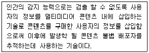
- 워터마킹
- 핑거프린팅
- 템퍼링기술
- DOI
(정답률: 56%)
63. 다음 중 커버로스에 대한 설명으로 올바르지 못한 것은 무엇인가?
- MIT에서 개발한 분산 환경 하에 개체인증 서비스를 제공한다.
- 클라이언트, 인증서버, 티켓서버, 서버로 구성된다.
- 커버로스는 공개키 기반으로 만들어 졌다.
- 커버로스의 가장 큰 단점은 재전송공격에 취약하다는 것이다.
(정답률: 50%)
64. 실시간 인증서 상태를 알려주는 프로토콜은 무엇인가?
- CRL
- OCSP
- PCA
- DPV
(정답률: 71%)
65. 다음에서 설명하는 해시함수 성질은 무엇인가?
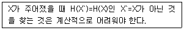
- 강한 충돌회피성
- 약한 충돌회피성
- 일방향성
- 계산의 용이성
(정답률: 41%)
66. 다음 중 임의적 접근통제 (DAC)설명으로 올바르지 않은 것은?
- 객체에 대하여 사용자가 접근권한을 추가 혹은 삭제 할 수 있다.
- 가장 일반적인 구현은 접근통제목록(ACL)을 통해 이루어진다.
- ACL은 중앙 집권적 통제방법에 적합하다.
- 대부분 운영체계에서 지원된다.
(정답률: 27%)
67. 블록암호화 모드 중 암호문 블록이 파손되면 2개의 평문블록에 영향을 끼치는 운영모드는 무엇인가?
- CBC
- CFB
- OFB
- ECB
(정답률: 39%)
68. 한 단계 앞의 암호문 블록이 존재하지 않을 때 대신할 비트열을 무엇이라 하는가?
- 패딩
- 스트림
- 초기벡타(IV)
- 블록모드
(정답률: 46%)
69. KDC(신뢰분배센터)에 사용자 수가 증가 될 때 영향으로 올바르지 못한 것은?
- 가입자 n의 증가에 따른 키 관리가 복잡해진다.
- 장기간 사용 시 세션 키가 노출 될 위험성이 발생한다.
- KDC 키가 늘어나지 않는다.
- 가입자 수 N에 따라 한 가입자마다 상대가입자수(N-1)만큼의 상호 세션키를 비밀리에 보관해야 한다.
(정답률: 34%)
70. 생일역설(Birthday attack)에 한전한 해시함수 비트는?
- 64비트
- 32비트
- 180비트
- 128비트
(정답률: 13%)
71. 다음 중 암호 운영모드 중 스트림 암호와 같은 역할을 하는 운영모드는?
- ECB, CBC
- CBC, OFB
- OFB, CFB
- CTR, OFB
(정답률: 45%)
72. 생체인식 기술에서 요구하는 사항에 포함되지 않는 것은?
- 보편성
- 구별성
- 일시성
- 획득성
(정답률: 50%)
73. 해시함수의 특징으로 올바르지 못한 것은?
- MAC와 달리 키를 사용하지 않는다.
- 에러 탐색기능을 제공한다.
- 해쉬함수 자체는 비밀이 아니기 때문에 해시값을 포함한 암호가 필요하다.
- 메시지 한 비트 변화가 해시코드의 일부의 변화만 가져온다.
(정답률: 19%)
74. 커버로스 프로토콜에서 티켓에 포함되는 사항이 아닌 것은?
- 서버ID
- 클라이언트ID
- 서버의 네트워크주소
- 티켓의 유효기간
(정답률: 53%)
75. 다음 중 접근통제정책에 포함되지 않는 것은?
- DAC
- MAC
- NAC
- RBAC
(정답률: 32%)
76. 무결성에 기반 한 접근통제 모델로 낮은 무결성 등급의 데이터는 읽을 수 없고, 높은 등급의 데이터는 수정 할 수 없는 접근 통제 모델은?
- 비바모델
- 벨-라파듈라모델
- 클락윌슨모델
- 접근통제모델
(정답률: 50%)
77. 다음과 같은 특성을 가지는 접근통제 모델은 무엇인가?
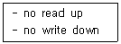
- 클락윌슨모델
- 벨-라파듈라 모델
- 비바모델
- 내부접근통제 모델
(정답률: 65%)
78. 공개키 인증서에 포함되지 않는 내용은 무엇인가?
- 버전
- 일련번호
- 유효기간
- 개인키 정보
(정답률: 64%)
79. 인증서 취소사유에 해당되지 않는 것은?
- 인증서 발행 조직에서 탈퇴
- 비밀키 손상
- 비밀키의 유출의심
- 공개키의 공유
(정답률: 40%)
80. 다음 공개키 암호알고리즘 중에서 이산대수에 기반 한 알고리즘이 아닌 것은?
- Diffi-Hellman
- EI Gamal
- DSA
- RSA
(정답률: 25%)
5과목: 정보보안 관리 및 법규
81. 다음 중 법에 따른 암호화 대상이 아닌 것은?
- 주민등록번호
- 바이오정보
- 비밀번호
- 전화번호
(정답률: 48%)
82. 위험의 구성요소가 아닌 것은?
- 자산
- 위협
- 손실
- 취약성
(정답률: 45%)
83. 다음 중 CCTV를 설치할 수 있는 곳이 아닌 것은?
- 교도소
- 교통단속을 위한 도로
- 범죄 예방을 위한 발열 실(목욕탕, 사우나)
- 병원
(정답률: 38%)
84. 다음에서 설명하는 위험처리 방식은?
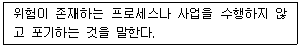
- 위험수용
- 위험회피
- 위험전가
- 위험감소
(정답률: 27%)
85. 다음 중 정량적 위험분석 방법론에 속하지 않는 것은?
- 과거자료 분석법
- 확률분포법
- 순위결정법
- 수학공식접근법
(정답률: 17%)
86. 다음 중 정성적 위험평가 방법에 대한 설명으로 올바르지 못한 것은?
- 계산에 대한 노력이 적게 든다.
- 위험분석과정이 지극히 주관적이다.
- 측정결과를 화폐로 표현하기 어렵다.
- 위험관리 성능평가가 용이하다.
(정답률: 39%)
87. 다음 중 개인정보보호법 의한 암호화 대상을 고르면?
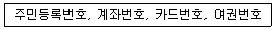
- 주민등록번호
- 주민등록번호, 여권번호
- 주민등록번호, 계좌번호, 카드번호
- 주민등록번호, 계좌번호, 여권번호, 카드번호
(정답률: 20%)
88. 공인인증서에 포함하지 않는 것은 무엇인가?
- 가입자 이름
- 주소
- 일련번호
- 유효기간
(정답률: 31%)
89. 다음 중 공인인증서 소멸 요건이 아닌 것은?
- 공인인증서 유효기간이 경과된 경우
- 공인인증기관의 지정이 취소가 된 경우
- 공인인증서 효력이 정지된 경우
- 공인인증서 훼손이 된 경우
(정답률: 15%)
90. 공인인증서 폐지요건으로 올바르지 못한것은?
- 공인인증서 효력이 정지된 경우
- 사기 기타 부정한 방법으로 발급받은 사실을 인지한 경우
- 사망•실종선고 또는 해산 사실을 인지한 경우
- 전자서명생성정보가 분실•훼손 또는 도난•유출된 사실을 인지한경우
(정답률: 29%)
91. 개인정보 누출시 통지해야 할 사항으로 올바르지 못한 것은?
- 개인정보 누출항목
- 개인정보 누출 발생시점과 사유
- 개인정보 2차 피해를 최소화하기 위한 방안
- 정보서비스 제공자의 법적 대리인 및 연락처
(정답률: 32%)
92. 다음 중 공인인증 업무로 적절한 것은 무엇인가?
- 행정자치부장관은 공인인증업무를 안전하고 신뢰성 있게 수행할 능력이 있다고 인정되는 자를 공인인증기관으로 지정할 수 있다.
- 공인인증기관으로 지정 받을 수 있는 자는 국가기관지방자치단체에 한한다.
- 공인인증기관 가입자 또는 인증무역 이용자를 부당하게 차별하여서는 아니 된다.
- 공인인증기관이 인증업무를 폐지하고자 하는 때에는 폐지하고자 하는 날의 30일전까지 이를 가입자에게 통보하고 미래창조과학부 장관에게 신고하여야 한다.
(정답률: 23%)
93. 개인정보보호법에서 개인정보 수집 시 고지 항목으로 올바르지 못한 것은?
- 이용목적
- 이용항목
- 이용기간
- 파기방법
(정답률: 17%)
94. 개인정보보보헙에 의한 대리인의 권한 행사 나이는?
- 만13세 이상
- 만14세 미만
- 만16세 이상
- 만18세 미만
(정답률: 32%)
95. 개인정보보호법에 따른 사내 개인정보보호 교육의 주기는?
- 1년에 1회
- 1년에 2회
- 1년에 3회
- 1년에 6회
(정답률: 25%)
96. 다음 중 주요통신기반시설 취약성 평가/분석 기관이 아닌 것은?
- 한국정보화진흥훤
- 한국인터넷진흥원
- 지식정보보안컨설팅전문업체
- 한국전자통신연구원
(정답률: 34%)
97. 개인정보 3자 위탁(제공시 동의) 설명으로 올바르지 못한 것은?
- 동의를 받은 경우
- 개인의 불이익 항목을 고지(알린다)한다.
- 법률에 정한경우
- 정보서비스보다 개인의 이익이 상당한 때
(정답률: 34%)
98. 지식정보보안 컨설팅 전문업체 지정 결격사유에 해당하지 않는 것은?
- 파산선고를 받고 복권되지 않는 사람
- 미성년자, 금치산자 또는 한정치산자
- 금고 이상의 실형을 선고받고 면제된 날로부터 1년이 지나지 않는 사람
- 금고이상의 형의 집행유예 선고나 그 유예기간에 있는 사람
(정답률: 9%)
99. 지식정보보안 컨설팅 전문업체 지정에 대한 근거 법은 무엇인가?
- 전자서명법
- 정보통신기반 보호법
- 정보통신산업진흥법
- 정보통신망 이용촉진 및 정보보호 등에 관한법률
(정답률: 13%)
100. 개인정보처리자가 시스템에 접속한 기록을 최소한 보관해야 하는 기간은 얼마인가?
- 3개월
- 6개월
- 1년
- 2년
(정답률: 21%)